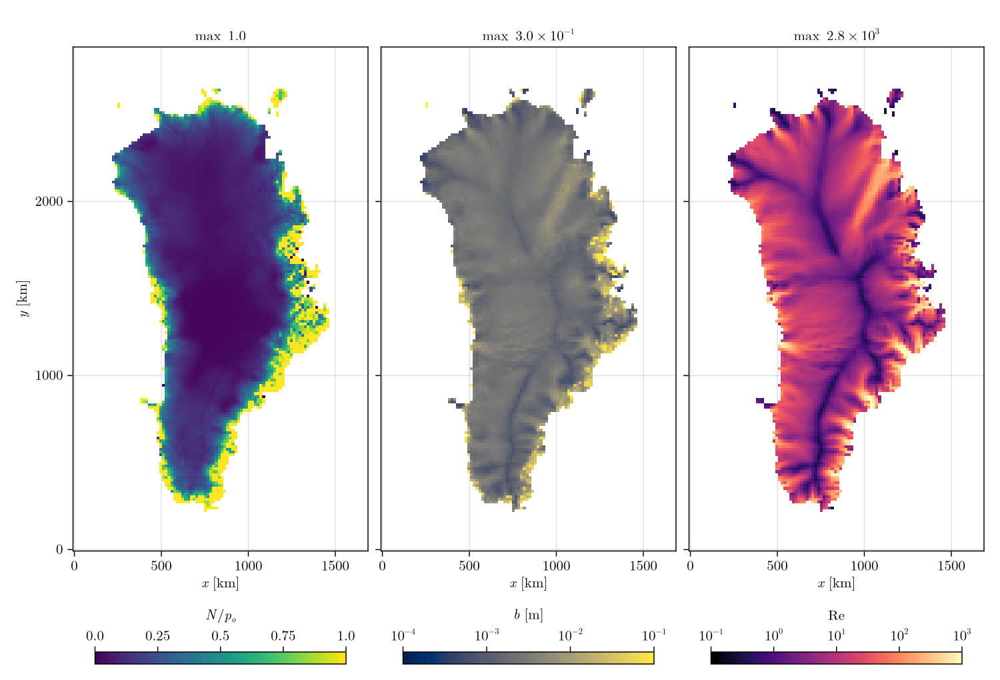
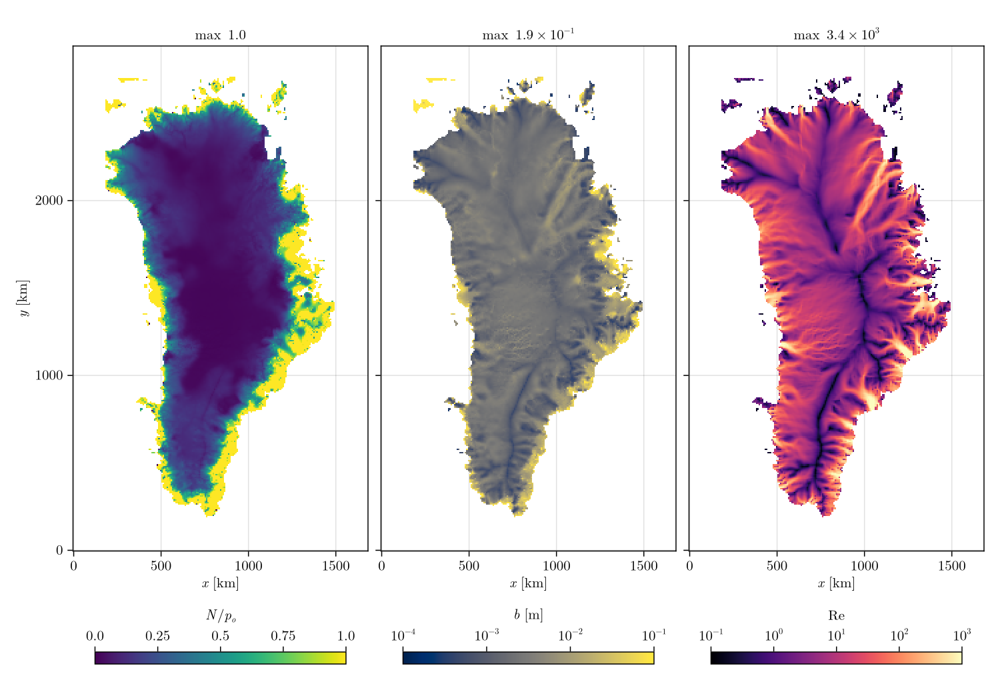

Greenland
The Greenland Ice Sheet from Yelmo restarts at 16 km and 8 km, the same restarts as the FastHydrology.jl examples. The default sheet, one year of 1-day steps. The loader is load_yelmo in docs/make_figures.jl, which also makes the figures; the restart paths are local (docs/figure_paths.jl).
- Mask: grounded where
f_ice > 0,f_grnd > 0andH > 0; ice-free land above sea level isLAND(an outlet at atmospheric pressure), the restOCEAN. Grounded cells below flotation that connect to the ocean are set toOCEAN. Afrom Yelmo'sATT(depth mean, per year to per second), smoothed over three passes;GfromQ_geo.- Sliding:
RegularizedCoulombSlidingLaw(0.25)with Yelmo's basal speed (ux_b,uy_b). - No surface input; the water comes from basal melt.
using Shakti
d = load_yelmo(restart) # (; xc, yc, DX, mask, H, zb, A, G, ub_x, ub_y)
Nx, Ny = size(d.H)
grid = Grid(Nx, Ny, (Nx - 1) * d.DX, (Ny - 1) * d.DX)
sl = RegularizedCoulombSlidingLaw(0.25)
b = fill(1e-3, Nx, Ny)
p = ModelParameters() # defaults
state = State(grid)
set_initial_conditions!(state, grid, p, sl, d.mask, d.A, d.zb, d.zb .+ d.H .+ b, b, d.G, d.ub_x, d.ub_y,
zeros(Nx, Ny), zeros(Nx + 1, Ny), zeros(Nx, Ny + 1))
ps = PicardSolver(500, 1e-6, CUDSSDirectSolver(grid; structure = :general), grid) # LUDirectSolver(grid) on CPU
sim = Simulation(grid, state, 365, floattype(86400.0), p, "fully_implicit", ["N", "b", "Re", "po"],
ConstantMeltInput(), sl; ps = ps, which_observer = "IO", which_file_writer = "NetCDF",
tracked_times = [0, 365], path = "greenland.nc")
run!(sim)| Grid | Cells | Grounded | Steps | N/p_o | Mean N | Max b |
|---|---|---|---|---|---|---|
| 16 km | 106 x 181 | 6 612 | 365 x 1 day | 0 to 1 | 1.93 MPa | 0.30 m |
| 8 km | 211 x 361 | 27 601 | 365 x 1 day | 0 to 1 | 1.86 MPa | 0.20 m |
Wall times are on the Performance page.
16 km

8 km

In the interior the water pressure is close to the overburden; towards the margins, where the ice thins and the water drains to LAND at atmospheric pressure, N/p_o rises to 1. The sheet is laminar under the divides and turbulent in the outlet systems. The small ice caps detached from the sheet hold the largest gaps on the 8 km grid. On the 16 km grid one cell, where the ice is 9 mm thick, ends with a gap larger than the ice thickness.